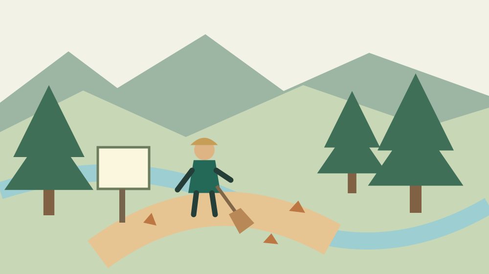
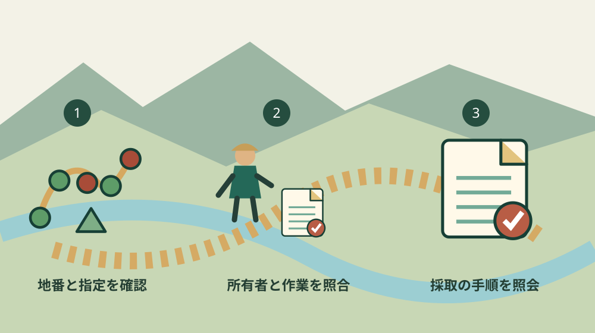

森町の保安林｜落ち葉を採る前の確認
／ 農地・山林・茶畑
Q. 落ち葉を少し拾うだけでも、山で確認がいるの？
A. 森町の山で落ち葉や落枝を採る前に、所有者の了解と保安林の指定を確認します。静岡県は保安林内の下草・落葉・落枝の採取届出書を掲載しています。個別の山の指定、採取の例外、提出先は公開ページだけで決められません。地番と採り方を整理し、森町の林務の窓口へ要否と手順を確認してから作業します。
山を手入れする負担を、採取の前に考える
森町の山を管理する持ち主の方には、道を保ち、倒れそうな木に気を配り、境目を確かめる仕事があります。秋に落ち葉を集めたいと思ったときも、すでに山を維持している人の負担を飛ばしたくありません。地面に落ちているから自由に持ち帰れる、と決める前に場所と権利を確かめます。
大石浩之（磐田市／不動産業）です。この記事は、森町の山で落ち葉や落枝を集め、畑などで使いたい方に向けた確認の案内です。木を切る手続きの解説とは分けます。土地が保安林かどうか、予定する採取にどんな確認が要るかを、窓口へ伝えられる形にします。
確認日は2026年10月15日です。主な出典は静岡県森林保全課の「保安林について」で、表示更新日は2026年6月17日です。2026年に落ち葉採取の新制度が始まったという記事ではありません。秋の山の手入れに合わせ、県が掲載している様式を読むものです。
伐採を予定する方には、森町の山で木を切る前の確認順があります。落ち葉を集めることと、立木を切ることでは、説明する行為が違います。木を切らないから全ての確認が不要だとも、伐採の書類があれば採取も済むとも考えないでください。
県の案内｜落葉・落枝の採取に専用の届出書がある
静岡県の保安林の案内は、暮らしを守る役割を持つ森林を保安林に指定し、伐採の制限や治山事業などを行う仕組みを説明しています。保安林は、単に木が生えている山を指す呼び方ではありません。対象地にどの指定があるかを確認する必要があります。
県の「各種様式」のうち土地の形質変更の欄には、「保安林内下草、落葉又は落枝の採取届出書」があります。土地の形質変更等の許可申請書などと並んで掲載されています。立木の伐採に関する許可申請書や、間伐の届出書とは別の様式です。
私は、木を切らない落ち葉採取にも専用の書類がある点が、見落とされやすいと感じます。畑の材料を集める身近な作業でも、保安林という指定に関わる場合があります。だからこそ、行く前に土地と採取内容を確かめる順番が必要です。様式の存在を知るだけでも、聞く質問が変わります。
ただし、県の案内本文だけでは、どの山でも少量の採取に必ず届出が要るか、例外がどう適用されるかまでは確定できません。私は、量が少なければ自由といった基準をこの記事で作りません。採る場所、量、方法、予定日を伝えて、その行為について要否を確認する形を勧めます。
県は、保安林事務の一部が2006年4月1日から市町へ移され、届出書や許可申請書の一部を市町役場に提出できると説明しています。「一部」という範囲を飛ばし、全ての書類を町へ出せばよいとは案内できません。採取届の提出先も、具体的な場所と作業を示して確かめます。

場所の確認｜地番・所有者・保安林の指定を分ける
森町の山で採取の相談をする際は、地番が分かる資料と、場所を示す地図をそろえる方法があります。私は、山の通称だけで問い合わせるより、窓口と同じ場所を見られる準備を勧めます。地番が分からない場合は、そのことを明示し、手元の納税資料などから調べる段取りを相談します。
場所を調べる入口として、森町の山林を森林クラウドで調べる際の注意点も参考になります。ただし、公開地図を見ただけで所有者、正確な境界、個別の指定条件が全て確定するわけではありません。現地の線を自分で引いて採取範囲を決めないでください。
所有者の了解を得ることと、必要な公的手続きを済ませることは別です。私は、持ち主が許可してくれたから届出も不要、と扱わない考えです。反対に、窓口で手続きを確認しても、他人の土地へ立ち入る権利を得たことにはなりません。双方を別の欄で記録します。
家族の山という場合も、誰が所有し、誰が管理しているかを照合します。近くに住む親族が手入れしている土地と、その親族が単独で持つ土地は同じとは限りません。私は、家族の呼び方で権利関係を決めず、分からない場合は所有関係を確認してから予定を進めることを勧めます。
森町の森林所有者届出の案内は、対象となる森林を相続や売買などで取得した場合の届出を説明しています。これは保安林の採取届とは別の制度です。土地を引き継いだことと、その土地で採取してよいことを、一つの届出で確認済みにしないためにも、書類の目的を区別します。
良い点｜作業の違いを見ながら質問できる
静岡県の保安林の案内の良い点は、立木の伐採と、下草・落葉・落枝の採取に関する様式が分かれていることです。私は、山で行う仕事を具体的な言葉にして相談する入口として評価します。木を切るのか、落ちているものを集めるのかで、準備する質問を変えられます。
市町に提出できる手続きがあると示されている点も、持ち主には助けになります。県の窓口まで移動する前に、身近な町の窓口へ確認できる余地があるためです。ただし、どの事務が対象かを聞く必要は残ります。私は、移動の負担を減らすためにも、初回は資料を手元に置いて照会する方法を勧めます。
森町の伐採の案内も、保安林では別途許可や届出が必要と注意しています。一般の伐採届の案内を、そのまま全ての山に当てはめないための記述です。県の保安林の案内と町の説明を並べると、行為の前に土地の指定を確かめる理由が見えます。
私は、山を管理する人が確認先を持てること自体にも意味があると思います。採取したい人が必要な質問を先に整理すれば、持ち主が一から制度を調べ直す負担を減らせます。手続きを相手へ丸ごと任せるのではなく、作業する側が場所と予定を伝える準備をする形です。
注文したい点｜例外や提出先は作業ごとに照会が残る
保安林の案内は様式の所在を示していますが、森町の特定の山で予定する採取の答えを一度に得られるページではありません。私は、採取の相談で伝える事項や確認先を、初めての人にも見つけやすくすると助かると考えます。書類の名前だけでは、家族で何を準備するかまで分からないためです。
私自身、庭の掃除の感覚と山の採取の線を、どこまで生活の言葉で説明できるか迷います。身近な行為だから難しいと脅す必要はありません。しかし、落ち葉だから自由と軽く済ませることもできません。記事で一律の線を作らず、場所と行為を伝えて確認する道筋を示すのが私の立場です。
窓口へは、落ち葉だけを手で集めるのか、落枝も拾うのか、下草を扱うのかを分けて伝えます。地面を掘る、機械を入れる、進入路を変える予定があるなら、それも隠さず説明します。私は、質問の段階で作業を小さく見せると、受けた回答が実際の行為と合わなくなると考えます。
採った量の数え方や、繰り返し採る場合の扱いも確認事項です。この記事では袋の数などを例外の基準にしません。回答が得られたら、相談した条件と一緒に書き残します。後から量や場所を変える場合は、以前の回答で足りるかを改めて聞きます。
山へ入る経路と、採取する土地の持ち主が別の場合も考えます。私は、採取の了解だけで道を通れると判断しないようにしたいと思います。道を使う条件、車を止める場所、作業する人数を確認します。安全の判断も届出とは別であり、天候や現地の状況に不安があれば日程を先に決めない形が取れます。

対案・結論｜今日、場所と採り方のメモを一枚作る
森町の山で落ち葉を集めたい方が今日できる一歩は、地番と採り方を一枚にまとめることです。私は、場所、所有者、採るもの、量、方法、予定日の欄を提案します。確かめていない欄は未確認のままにします。全部がそろわなければ相談できない、という意味ではありません。
保安林か分からなければ、その指定を調べるために何の資料が必要かを聞きます。森町の伐採や森林所有者届出のページには、林務を扱う問い合わせ先として電話0538-85-6317が掲載されています。この記事では担当課名を略して町の林務の窓口と記します。採取届の提出先そのものは、照会して確定してください。
質問は「落ち葉を取っていいですか」だけよりも、具体的にします。「この地番で、落ち葉をこの方法で集めたい。保安林の指定と必要な手続きを確認したい」と伝える形です。量が未定なら、未定と伝えて判断に必要な情報を聞きます。相談した日と次の案内先を、その場で記録します。
持ち主へは、採る場所と目的、人数、時期を同じ内容で話します。公的手続きを調べている途中なら、その段階も伝えます。私は、関係する人が別々の作業を想像したまま予定だけ決めることを避けたいと考えます。後から作業範囲が広がる場合は、了解と窓口の確認を両方見直します。
届出などが必要と分かったら、使用する最新の様式、添付資料、提出時期、提出先を確かめます。県のページで名前を見つけただけで提出が済んだとは考えません。不要と案内された場合も、どの条件の採取についての回答かを残します。家族が次に同じ場所へ入るときの判断材料になります。
家族に残す記録｜所有の届出と採取の確認を混ぜない
山林の資料を家族へ残す際は、土地を取得した記録と、山で行う作業の確認記録を分けます。森町の案内では、対象となる森林の所有者届出は、所有者となった日から90日以内とされています。相続の場合の日の扱いも説明があります。対象や必要書類は個別に照合し、採取届と混同しないでください。
私は、地番ごとに地図、所有関係の資料、窓口の回答をまとめる方法を勧めます。場所が分からない山が複数ある場合は、全部の答えを待つより、一筆ずつ確認済みの欄を増やします。家族だけが知る呼び名には、どの資料のどの位置かを添えておきます。
山の管理の方向も考えたい方には、森町森林整備計画を読む記事が関連します。計画は管理を考える資料で、個々の採取の了解や届出の代わりではありません。広い方針と、今日の作業の確認を同じ紙の別の欄に置くと、目的を取り違えずに済みます。
採取しないという結論になっても、確認した場所や窓口の情報は残せます。私は、目的を変えたときにも役立つ資料を増やすことを前進と考えます。次の家族が同じ質問を最初から繰り返さず、何が未確認かをたどれる形を目指します。
作業を人に頼む場合は、伝える範囲をメモにします。採るものと残すもの、入ってよい範囲、連絡する相手をそろえます。私は、慣れている相手なら説明がいらないと省かず、その日の条件を共有する考えです。届出が済んだことだけを、安全や作業品質の保証として扱うこともしません。
大石の視点｜小さな採取でも、先に段取りを確かめる
私はこう考えます。落ち葉を採ることを小さな仕事と感じても、持ち主の了解、土地の指定、必要な手続きは小さくなりません。だからといって、山の利用をあきらめる話にしたくもありません。地番と採り方を一枚にして質問するなら、確認の入口は具体的になります。作業する前に聞く順番を作ることが先です。
この説明は、私が保安林で落ち葉採取をした実体験ではありません。不動産の仕事をする立場から、土地の権利と使う行為を分けるという意見です。窓口で聞いていない回答を実話として補ったり、個別の山の指定を見たことにしたりはしません。
森町の山には、暮らしに近い使い道を考える余地があると思います。その余地を使うにも、山を保っている人の仕事と、手続きの確認を飛ばせません。今日の一歩は、袋や熊手を積む前に、採りたい場所の地番と作業のメモを一つ用意することです。採るかどうかは、確認の後で決められます。
よくある質問
自分の山なら落ち葉を自由に採れますか？
所有していることだけで、保安林の採取に関する確認が不要とは判断できません。静岡県は下草・落葉・落枝の採取届出書を掲載しています。まず地番と保安林の指定を確かめ、量や方法を窓口へ説明してください。個別の例外や要否はこの記事で断定していません。家族の山の場合も、誰が所有し管理しているかを別に確認します。
木を切らないので伐採届だけ調べなくてもよいですか？
立木を切る行為と、落ち葉や落枝を採る行為は分けて確認します。県には採取の専用様式があり、一般の伐採届だけで手続きが済むとはいえません。木を切らなくても、下草を扱う、地面を掘るなどの作業があれば一緒に伝えてください。実際に行う作業と場所を示し、必要な手順を窓口で確かめる方法を勧めます。
採取届は森町役場へ出せばよいですか？
県は保安林事務の一部を市町へ移し、一部の届出書や許可申請書を市町で受け付けると説明しています。全ての採取届の提出先を、この案内だけで一律に確定することはできません。森町の林務の窓口へ地番と採取内容を伝え、要否、提出先、時期、添付資料を確認してください。確認した条件と日付を記録しておくと引継ぎにも使えます。
出典・確認日
- 静岡県森林保全課：保安林について（2026年10月確認／確認日：2026-10-15）
- 森町：森林を伐採する時には届出・許可が必要です（2026年10月確認／確認日：2026-10-15）
- 森町：森林の土地の所有者届出制度について（2026年10月確認／確認日：2026-10-15）
最終確認日：2026-10-15。制度・数値・窓口案内は変わる場合があります。最新情報は発信主体へ確認してください。権利・登記・相続・農業技術や安全管理など、個別の判断は担当窓口や適切な専門家へご相談ください。